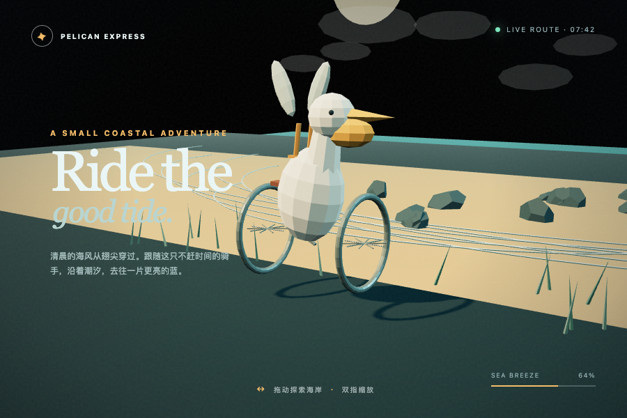

Model Frontend Demos
大模型前端生成能力展示
🚲 鹈鹕骑自行车 · 3D
题目：生成一个经典的「鹈鹕骑自行车」3D 网页，尽情发挥。两边都使用本地 Three.js r160，不走 CDN。
Claude Opus 4.8
卡通风格 · 草地公路
工具
Claude Code
日期
2026-10-01
过程
多轮迭代，生成过程中用无头浏览器截图检查并修复
打开页面 →

GPT-6.1 Sol
低多边形风格 · 海岸
工具
Codex CLI 0.154 · reasoning medium
日期
2026-10-02
过程
第一版运行报错、3D 不显示；反馈一次报错后由模型自行修复。页面代码未经人工修改
已知问题
车架未显示（几何体 NaN）、手机竖屏遮挡文字
Tokens
约 68.6k + 115.8k
打开修复版 →
第一版（报错）
提示词